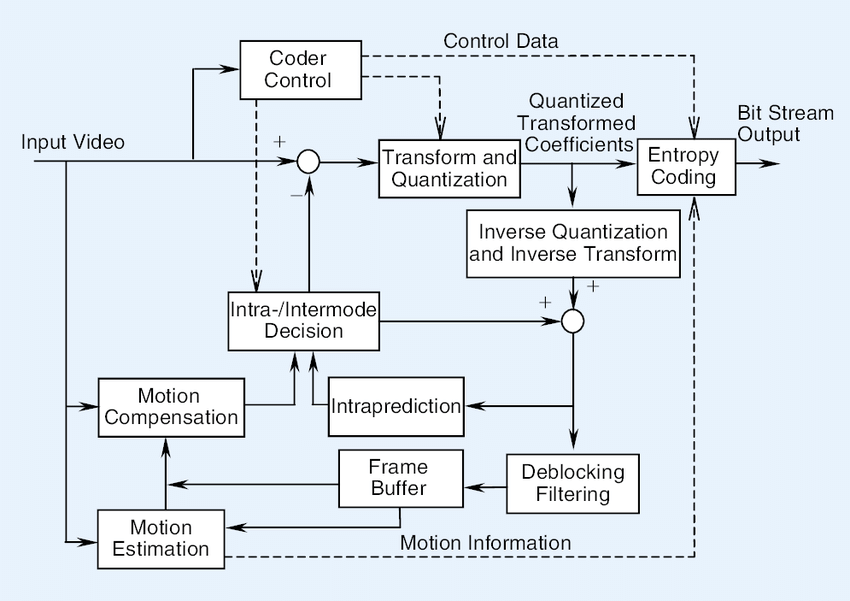
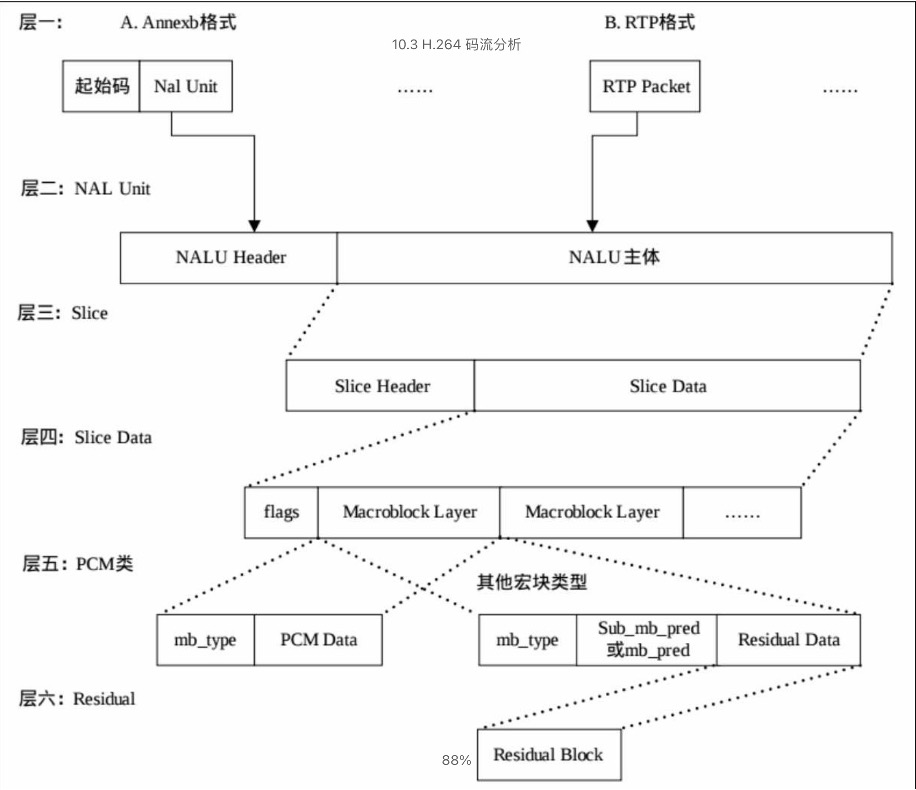

H.264 编码
Abstract |
H.264 Codec |
Authors |
Walter Fan |
Status |
WIP |
Updated |
2026-03-05 |
简介
高级视频编码 (AVC), 也称为 H.264 或 MPEG-4 第 10 部分, 高级视频编码 (MPEG-4 AVC), 是一种基于面向块的, 采用运动补偿和整数 DCT 编码的视频压缩标准。
截止2021 年末, 尽管H.265, AV1 已经冒出头来, H.264 依然是市场上最流行的视频编解码标准, 它成熟可靠, 而且相当灵活, 可适应不同的带宽, 既适用于在线视频服务和视频会议, 也适用于文件存储。
H.264 定义了 1 ~ 6.2 一系列的 Profile 等级, 每个 Profile 都有不同的分辨率, 码率, 帧率等范围
H.264 当前主要支持 YUV420 和 8bit 精度, 它支持固定和图像自适应帧编码 (PAFF) , 每一帧可以分为多个 Slice, 每个 Slice 又可以分成多个宏块, 每个宏块包含 16*16 个亮度像素, 8*8 和 U 分量, 8*8 的 V 分量。
主要特性有
错误反馈机制
增强的运动估计
改进的熵编码
I帧的帧内预测编码
4 * 4 的整数变换, 复杂度低, 无漂移
能够对从 16*16 到 4*4 的亮度图像进行可变块大小的运动补偿
通过内插实现了运动向量的四分之一像素精度
能鋔
网络抽象层 NAL
渐进式解码器刷新 (GDR: Gradual Decoder Refresh) 帧
长期参考图片 (LTRP: Long-Term Reference Picture) 帧

H.264/AVC 应用的主要技术
分层设计
视频编码层 VCL - Video Coding Layer 负责视频内容表示
网络提取层 NAL - Network Abstraction Layer 负责网络封包和传送
预测
帧内预测: 邻近宏块
帧间预测: 邻近帧预测, 运动估计和补偿
变换: 基于 4*4像素块的整数 DCT 变换
量化: 多对一的映射来降低码率
量化参数 QP 是量化步长 Qstep 的序号, QP 取最小值 0 时, 表示量化最精细；相反, QP 取最大值 51 时, 表示量化是最粗糙的。 对于亮度 (Luma) 编码而言, 量化步长 Qstep 共有 52 个值, QP取值 0~51 对于色度 (Chroma) 编码, Q的取值0~39
环路滤波: De-blocking Filter, Reconstruction Filter
2. 熵编码: 通用可变长编码 (UVLC) 和基于文本的自适应二进制算术编码 (CABAC) https://www.youtube.com/watch?v=PmoEsPWEdOA&t=265s
术语和缩写
DON: Decoding Order Number
DONB: Decoding Order Number Base
DOND: Decoding Order Number Difference
FEC: Forward Error Correction
FU: Fragmentation Unit
IDR: Instantaneous Decoding Refresh
IEC: International Electrotechnical Commission
ISO: International Organization for Standardization
- ITU-T: International Telecommunication Union,
Telecommunication Standardization Sector
MANE: Media-Aware Network Element
MTAP: Multi-Time Aggregation Packet
MTAP16: MTAP with 16-bit timestamp offset
MTAP24: MTAP with 24-bit timestamp offset
NAL: Network Abstraction Layer
NALU: NAL Unit
SAR: Sample Aspect Ratio
SEI: Supplemental Enhancement Information
STAP: Single-Time Aggregation Packet
STAP-A: STAP type A
STAP-B: STAP type B
TS: Timestamp
VCL: Video Coding Layer
VUI: Video Usability Information
H264 encoder
H.264 采用混合编码技术, 即把画面间运动预测和画面内空间预测组合, 并对残差进行变换编码

H264 decoder
熵解码
残差像素的逆量化和变换
运动补偿或帧内预测
重建
重建像素上的环路去块滤波器
File Format for H.264 Video
annexb format
([start code] NALU) | ( [start code] NALU) |
In annexb, [start code] may be 0x000001 or 0x00000001.
avcc format
([extradata]) | ([length] NALU) | ([length] NALU) |
In avcc, the bytes of [length] depends on NALULengthSizeMinusOne in avcc extradata, the value of [length] depends on the size of following NALU
RTP Payload Format for H.264 Video
参见 RFC6184: RTP Payload Format for H.264 Video
H.264 media stream
H264 over RTP 大体上分为三种:
Single NAL unit packet 一个包就是一个视频帧, NALU type : 1 ~ 23
Aggregation packet 一个包中含有多個H264帧 - NALU type 24: Single-Time Aggregation Packet type A (STAP-A) - NALU type 25: Single-Time Aggregation Packet type B (STAP-B) - NALU type 26: Multi-Time Aggregation Packet (MTAP) with 16-bit offset (MTAP16) - NALU type 27: Multi-Time Aggregation Packet (MTAP) with 24-bit offset (MTAP24)
Fragmentation unit 一帧数据被分为多个 RTP包, 常用于关键帧 - NALU type 28: FU-A - NALU type 29: FU-B
Table 1. Summary of NAL unit types and the corresponding packet
types
NAL Unit Packet Packet Type Name Section
Type Type
-------------------------------------------------------------
0 reserved -
1-23 NAL unit Single NAL unit packet 5.6
24 STAP-A Single-time aggregation packet 5.7.1
25 STAP-B Single-time aggregation packet 5.7.1
26 MTAP16 Multi-time aggregation packet 5.7.2
27 MTAP24 Multi-time aggregation packet 5.7.2
28 FU-A Fragmentation unit 5.8
29 FU-B Fragmentation unit 5.8
30-31 reserved -
RTP header
针对 H264视频帧, RTP 头中的某些字段有如下设置
Marker bit (M): 1 bit
为 RTP 包中时间戳所指示的访问单元的最后一个数据包中设置 marker=1, 这样可以用来进行有效的播放缓冲区处理。
在FU-A中的 marker 设定为只有最后一包才会设定 marker=1, 其它则为 0
Sequence number (SN): 16 bits
根据 RFC 3550 的定义来设置和使用, 对于单NALU和非交错打包模式, 序列号用于确定NALU的解码顺序。
Timestamp: 32 bits
RTP 时间戳设置为视频内容的采样时间戳, 必须使用 90 kHz 时钟频率。
例如 H264的采样率为 90khz, 帧率 frame rate =15 那么每个包的时间戳 Timestamp 的步长约为 90000/15 = 6000
0 1 2 3
0 1 2 3 4 5 6 7 8 9 0 1 2 3 4 5 6 7 8 9 0 1 2 3 4 5 6 7 8 9 0 1
+-+-+-+-+-+-+-+-+-+-+-+-+-+-+-+-+-+-+-+-+-+-+-+-+-+-+-+-+-+-+-+-+
|V=2|P|X| CC |M| PT | sequence number |
+-+-+-+-+-+-+-+-+-+-+-+-+-+-+-+-+-+-+-+-+-+-+-+-+-+-+-+-+-+-+-+-+
| timestamp |
+-+-+-+-+-+-+-+-+-+-+-+-+-+-+-+-+-+-+-+-+-+-+-+-+-+-+-+-+-+-+-+-+
| synchronization source (SSRC) identifier |
+=+=+=+=+=+=+=+=+=+=+=+=+=+=+=+=+=+=+=+=+=+=+=+=+=+=+=+=+=+=+=+=+
| contributing source (CSRC) identifiers |
| .... |
+-+-+-+-+-+-+-+-+-+-+-+-+-+-+-+-+-+-+-+-+-+-+-+-+-+-+-+-+-+-+-+-+
RTP payload

NAL: Network Abstraction Layer
VCL: Video Coding Layer VCL Layer contains slices, slice transmit by NALU
NAL Unit
Single NALU: 如果一个视频帧包含1个NALU, 可以单独打包成一个 RTP 包, 那么RTP时间戳就对应这个帧的采集时间；
FU-A: 如果一个视频帧的 NALU 过大(超过 MTU)需要拆分成多个包, 可以使用 FU-A 方式来拆分并打到不同的 RTP 包里, 那么这几个包的 RTP 时间戳是一样的；
STAP-A: 如果某帧较大不能单独打包, 但是该帧内部单独的 NALU 比较小, 可以使用STAP-A方式合并多个NALU打包发送, 但是这些NALU的时间戳必须一致, 打包后的RTP时间戳也必须一致
NAL Unit Header: * F: Forbidden_bit * NRI: nal_ref_idc * Type: Nal_unittype
+---------------+
|0|1|2|3|4|5|6|7|
+-+-+-+-+-+-+-+-+
|F|NRI| Type |
+---------------+
NRI
00: the content of the NAL unit is not used to reconstruct reference pictures for inter picture prediction
- 11:
nal_unit_type=7: SPS(Sequence Parameter Set)
nal_unit_type=8: PPS(Picture Parameter Set)
nal_unit_type=5: a coded slice belonging to an IDR picture
Table 2. Example of NRI values for coded slices and coded slice
data partitions of primary coded reference pictures
NAL Unit Type Content of NAL Unit NRI (binary)
----------------------------------------------------------------
1 non-IDR coded slice 10
2 Coded slice data partition A 10
3 Coded slice data partition B 01
4 Coded slice data partition C 01
NAL Unit Type
NAL Type |
Definition |
|---|---|
0 |
Undefined |
1 |
Slice layer without partitioning non IDR |
2 |
Slice data partition A layer |
3 |
Slice data partition B layer |
4 |
Slice data partition C layer |
5 |
Slice layer without partitioning IDR |
6 |
Additional information (SEI) |
7 |
Sequence parameter set |
8 |
Picture parameter set |
9 |
Access unit delimiter |
10 |
End of sequence |
11 |
End of stream |
12 |
Filler data |
13..23 |
Reserved |
24..31 |
Undefined |
RFC6184 还定义了 聚合包 STAP 单一时间聚合包, MTAP 多时间聚合包, FU 片断单元包
Table 3. Summary of allowed NAL unit types for each packetization
mode (yes = allowed, no = disallowed, ig = ignore)
Payload Packet Single NAL Non-Interleaved Interleaved
Type Type Unit Mode Mode Mode
-------------------------------------------------------------
0 reserved ig ig ig
1-23 NAL unit yes yes no
24 STAP-A no yes no
25 STAP-B no no yes
26 MTAP16 no no yes
27 MTAP24 no no yes
28 FU-A no yes yes
29 FU-B no no yes
30-31 reserved ig ig ig
先看看 Signal NAL Unit packet 单个 NAL 单元数据包
0 1 2 3
0 1 2 3 4 5 6 7 8 9 0 1 2 3 4 5 6 7 8 9 0 1 2 3 4 5 6 7 8 9 0 1
+-+-+-+-+-+-+-+-+-+-+-+-+-+-+-+-+-+-+-+-+-+-+-+-+-+-+-+-+-+-+-+-+
|F|NRI| Type | |
+-+-+-+-+-+-+-+-+ |
| |
| Bytes 2..n of a single NAL unit |
| |
| +-+-+-+-+-+-+-+-+-+-+-+-+-+-+-+-+
| :...OPTIONAL RTP padding |
+-+-+-+-+-+-+-+-+-+-+-+-+-+-+-+-+-+-+-+-+-+-+-+-+-+-+-+-+-+-+-+-+
Figure 2. RTP payload format for single NAL unit packet
再看看聚合包
0 1 2 3
0 1 2 3 4 5 6 7 8 9 0 1 2 3 4 5 6 7 8 9 0 1 2 3 4 5 6 7 8 9 0 1
+-+-+-+-+-+-+-+-+-+-+-+-+-+-+-+-+-+-+-+-+-+-+-+-+-+-+-+-+-+-+-+-+
|F|NRI| Type | |
+-+-+-+-+-+-+-+-+ |
| |
| one or more aggregation units |
| |
| +-+-+-+-+-+-+-+-+-+-+-+-+-+-+-+-+
| :...OPTIONAL RTP padding |
+-+-+-+-+-+-+-+-+-+-+-+-+-+-+-+-+-+-+-+-+-+-+-+-+-+-+-+-+-+-+-+-+
Figure 3. RTP payload format for aggregation packets
例如一个 STAP 包, "STAP-A NAL HDR" 随后跟随一个 "NALU SIZE", 它是一个 16bit 的无符号整数, 表示随后的 NALU 的大小 (除去自身的2个字节, 但包含所指的 NALU 的头)
0 1 2 3
0 1 2 3 4 5 6 7 8 9 0 1 2 3 4 5 6 7 8 9 0 1 2 3 4 5 6 7 8 9 0 1
+-+-+-+-+-+-+-+-+-+-+-+-+-+-+-+-+-+-+-+-+-+-+-+-+-+-+-+-+-+-+-+-+
| RTP Header |
+-+-+-+-+-+-+-+-+-+-+-+-+-+-+-+-+-+-+-+-+-+-+-+-+-+-+-+-+-+-+-+-+
|STAP-A NAL HDR | NALU 1 Size | NALU 1 HDR |
+-+-+-+-+-+-+-+-+-+-+-+-+-+-+-+-+-+-+-+-+-+-+-+-+-+-+-+-+-+-+-+-+
| NALU 1 Data |
: :
+ +-+-+-+-+-+-+-+-+-+-+-+-+-+-+-+-+-+-+-+-+-+-+-+-+
| | NALU 2 Size | NALU 2 HDR |
+-+-+-+-+-+-+-+-+-+-+-+-+-+-+-+-+-+-+-+-+-+-+-+-+-+-+-+-+-+-+-+-+
| NALU 2 Data |
: :
| +-+-+-+-+-+-+-+-+-+-+-+-+-+-+-+-+
| :...OPTIONAL RTP padding |
+-+-+-+-+-+-+-+-+-+-+-+-+-+-+-+-+-+-+-+-+-+-+-+-+-+-+-+-+-+-+-+-+
Figure 7. An example of an RTP packet including an STAP-A
containing two single-time aggregation units
对于 FU, 其封包格式如下
0 1 2 3
0 1 2 3 4 5 6 7 8 9 0 1 2 3 4 5 6 7 8 9 0 1 2 3 4 5 6 7 8 9 0 1
+-+-+-+-+-+-+-+-+-+-+-+-+-+-+-+-+-+-+-+-+-+-+-+-+-+-+-+-+-+-+-+-+
| FU indicator | FU header | |
+-+-+-+-+-+-+-+-+-+-+-+-+-+-+-+-+ |
| |
| FU payload |
| |
| +-+-+-+-+-+-+-+-+-+-+-+-+-+-+-+-+
| :...OPTIONAL RTP padding |
+-+-+-+-+-+-+-+-+-+-+-+-+-+-+-+-+-+-+-+-+-+-+-+-+-+-+-+-+-+-+-+-+
Figure 14. RTP payload format for FU-A
The FU indicator octet has the following format:
+---------------+
|0|1|2|3|4|5|6|7|
+-+-+-+-+-+-+-+-+
|F|NRI| Type |
+---------------+
The FU header has the following format:
+---------------+
|0|1|2|3|4|5|6|7|
+-+-+-+-+-+-+-+-+
|S|E|R| Type |
+---------------+
S: 1 bit 开始标志位
When set to one, the Start bit indicates the start of a fragmented NAL unit. When the following FU payload is not the start of a fragmented NAL unit payload, the Start bit is set to zero.
E: 1 bit 结束标志位
When set to one, the End bit indicates the end of a fragmented NAL unit, i.e., the last byte of the payload is also the last byte of the fragmented NAL unit.
When the following FU payload is not the last fragment of a fragmented NAL unit, the End bit is set to zero.
R: 1 bit 保留位
The Reserved bit MUST be equal to 0 and MUST be ignored by the receiver.
Type: 5 bits 指 NAL unit 的类型
The NAL unit payload type as defined in Table 7-1 of [1].
H.264 打包原则
All senders MUST enforce the following packetization rules, regardless of the packetization mode in use:
- o Coded slice NAL units or coded slice data partition NAL units
belonging to the same coded picture (and thus sharing the same RTP timestamp value) MAY be sent in any order; however, for delay- critical systems, they SHOULD be sent in their original decoding order to minimize the delay. Note that the decoding order is the order of the NAL units in the bitstream.
- o Parameter sets are handled in accordance with the rules and
recommendations given in Section 8.4.
- o MANEs MUST NOT duplicate any NAL unit except for sequence or
picture parameter set NAL units, as neither this memo nor the H.264 specification provides means to identify duplicated NAL units. Sequence and picture parameter set NAL units MAY be duplicated to make their correct reception more probable, but any such duplication MUST NOT affect the contents of any active sequence or picture parameter set. Duplication SHOULD be performed on the application layer and not by duplicating RTP packets (with identical sequence numbers).
Senders using the non-interleaved mode and the interleaved mode MUST enforce the following packetization rule:
- o In an RTP translator, MANEs MAY convert single NAL unit packets
into one aggregation packet, convert an aggregation packet into several single NAL unit packets, or mix both concepts. The RTP translator SHOULD take into account at least the following parameters: path MTU size, unequal protection mechanisms (e.g., through packet-based FEC according to RFC 5109 [18], especially for sequence and picture parameter set NAL units and coded slice data partition A NAL units), bearable latency of the system, and buffering capabilities of the receiver.
H.264 相关的 SDP 属性
max-fs: max frame size 最大帧尺寸, 宏块的个数
The value of max-fs is an integer indicating the maximum frame size in units of macroblocks. The max-fs parameter signals that the receiver is capable of decoding larger picture sizes than are required by the signaled highest level conveyed in the value of the profile-level-id parameter or the max-recv- level parameter. When max-fs is signaled, the receiver MUST be able to decode NAL unit streams that conform to the signaled highest level, with the exception that the MaxFS value in Table A-1 of [1] for the signaled highest level is replaced with the value of max-fs. The value of max-fs MUST be greater than or equal to the value of MaxFS given in Table A-1 of [1] for the highest level. Senders MAY use this knowledge to send larger pictures at a proportionally lower frame rate than is indicated in the signaled highest level.
max-fs |
Resoluwidthtion |
height |
Description |
|---|---|---|---|
3600 |
1280 |
720 |
Standard 720p |
8160 |
1920 |
1088 |
Standard 1080p |
9000 |
1920 |
1200 |
16:10 1080p |
14400 |
2560 |
1440 |
Standard 1440p |
18225 |
2880 |
1620 |
High end laptops |
32400 |
3840 |
2160 |
Standard 4K |
microblock: 宏块, H264 将整个图片分为若干个区域, 这些区域称为宏块
H264默认是使用 16X16 大小的区域作为一个宏块, 也可以划分成 8X8 大小。
max-mbps: 每秒的最大宏块处理速率
The value of max-mbps is an integer indicating the maximum macroblock processing rate in units of macroblocks per second. The max-mbps parameter signals that the receiver is capable of decoding video at a higher rate than is required by the signaled highest level conveyed in the value of the profile-level-id parameter or the max-recv-level parameter.
level-asymmetry-allowed: 是否允许层次不对称
This parameter MAY be used in SDP Offer/Answer to indicate whether level asymmetry, i.e., sending media encoded at a different level in the offerer-to-answerer direction than the level in the answerer-to-offerer direction, is allowed. The value MAY be equal to either 0 or 1. When the parameter is not present, the value MUST be inferred to be equal to 0. The value 1 in both the offer and the answer indicates that level asymmetry is allowed. The value of 0 in either the offer or the answer indicates that level asymmetry is not allowed.
If level-asymmetry-allowed is equal to 0 (or not present) in either the offer or the answer, level asymmetry is not allowed. In this case, the level to use in the direction from the offerer to the answerer MUST be the same as the level to use in the opposite direction.
packetization-mode: 表示支持的封包模式.
当 packetization-mode 的值为 0 时或不存在时, 必须使用单一 NALU 单元模式.
当 packetization-mode 的值为 1 时必须使用非交错(non-interleaved)封包模式.
当 packetization-mode 的值为 2 时必须使用交错(interleaved)封包模式.
This parameter signals the properties of an RTP payload type or the capabilities of a receiver implementation. Only a single configuration point can be indicated; thus, when capabilities to support more than one packetization-mode are declared, multiple configuration points (RTP payload types) must be used.
When the value of packetization-mode is equal to 0 or packetization-mode is not present, the single NAL mode MUST be used. This mode is in use in standards using ITU-T Recommendation H.241 [3] (see Section 12.1). When the value of packetization-mode is equal to 1, the non-interleaved mode MUST be used. When the value of packetization-mode is equal to 2, the interleaved mode MUST be used. The value of packetization- mode MUST be an integer in the range of 0 to 2, inclusive.
..code-block:
Table 6. Interpretation of parameters for different direction attributes
sendonly --+
recvonly --+ |
sendrecv --+ | |
| | |
profile-level-id C C P
max-recv-level R R -
packetization-mode C C P
sprop-deint-buf-req P - P
sprop-interleaving-depth P - P
sprop-max-don-diff P - P
sprop-init-buf-time P - P
max-mbps R R -
max-smbps R R -
max-fs R R -
max-cpb R R -
max-dpb R R -
max-br R R -
redundant-pic-cap R R -
deint-buf-cap R R -
max-rcmd-nalu-size R R -
sar-understood R R -
sar-supported R R -
in-band-parameter-sets R R -
use-level-src-parameter-sets R R -
level-asymmetry-allowed O - -
sprop-parameter-sets S - S
sprop-level-parameter-sets S - S
Legend:
C: configuration for sending and receiving streams
O: offer/answer mode
P: properties of the stream to be sent
R: receiver capabilities
S: out-of-band parameter sets
-: not usable (when present, SHOULD be ignored)
profile-level-id
A base16 (hexadecimal) representation of the following three bytes in the sequence parameter set NAL unit , e.g. profile-level-id=42e01f
profile_idc: 0x42 = 66 --> Baseline Profile (BP, 66)
profile-iop: constraint_set{0,1,2,3,4,5}_flag, 2 reserved bits 0
level_idc: 0x1f = 31, --> Level 3.1
packetization-mode
0 = a single NALU packet sent in an RTP packet, no fragments
1 = multiple NALUs can be sent in decoding order. Fragments allowed, non-interleaved
2 = multiple NALUs can be sent out of decoding order. Fragments allowed
The negotiated packetization mode for the call must be symmetrical
level-asymmetry-allowed
level-asymmetry-allowed表示是否允许两端编码的Level不一致。注意必须两端的SDP中该值都为1才生效
max-mbps
Max Decoding speed = Max Macroblocks/sec = 245000 (Baseline profile level 2.2 value = 20250) 表示每秒钟能处理的最大宏块数量
max-fs
max-fs=9000
Max Frame Size = 9000 Macroblocks (Baseline profile level 2.2 value = 1620) 接收端能够解码的一帧图像的最大尺寸, 这个尺寸用这帧图像包含的宏块数来量化, 即max-fs的数值。
720p的max-fs典型值是3600
1080p的max-fs典型值是8100
max-cpb
max-cpb=200
Max Coded Picture Buffer size = 200 kbits (Baseline profile level 2.2 value = 4 kbits) The value of max-cpb is an integer indicating the maximum coded picture buffer size in units of 1000 bits for the VCL HRD parameters and in units of 1200 bits for the NAL HRD parameters. 表示用来存储编码的图像的buffer的最大尺寸
max-dpb
decoded picture buffer 表示用来存储解码后图像的buffer的最大尺寸。
max-fps
max-fps=6000 接收端能够处理的最大帧率。如果发送端发送的帧率高于接收端设置的值, 那么接受端会在解码后丢掉多余的帧。 Max Frames Per Second in 1/100s of a frame/second = 60 fps (Baseline profile level 2.2 value = 30 fps)
max-rcmd-nalu-size
max-rcmd-nalu-size=3456000 Max NALU packet size (bytes) that the receiver can handle
max-smbps
max-smbps=245000 Max Static Macroblock processing rate – macroblocks/second
max-br
max-br=5000 Max video bit rate = 5000 kbps, Baseline profile level 2.2 value = 4000 kbps max-br表示最大比特率, 对VCL HRD参数是以1000bit为单位, 对NAL HRD参数是以1200bit为单位。例子中max-br=1500, 表示VCL HRD参数的最大比特率是1500 kbits/s, NAL HRD参数的最大比特率是1800 kbits/s。
SDP example
# Offer
v=0
o=- 3253768933345823887 2 IN IP4 127.0.0.1
s=-
t=0 0
a=group:BUNDLE 0 1 2 3 4 5 6
a=extmap-allow-mixed
a=msid-semantic: WMS
m=video 9 UDP/TLS/RTP/SAVPF 96 97 98 99 100 101 122 102 121 127 120 125 107 108 109 124 119 123 118 35 36 114 115 116 37
b=TIAS:4000000
c=IN IP4 0.0.0.0
a=rtcp:9 IN IP4 0.0.0.0
a=sprop-source:1;csi=1418838785
a=ice-ufrag:0+XIbf
a=ice-pwd:auoWDFWJ6RGm/B27pqcbEGMO
a=ice-options:trickle
a=fingerprint:sha-256 F4:D1:EF:98:11:62:37:EC:F6:FE:BF:43:4A:C8:13:46:34:EF:14:4C:DC:EC:E9:BC:10:67:A6:25:92:C9:72:65
a=setup:actpass
a=mid:0
a=extmap:1 urn:ietf:params:rtp-hdrext:toffset
a=extmap:2 http://www.webrtc.org/experiments/rtp-hdrext/abs-send-time
a=extmap:3 urn:3gpp:video-orientation
a=extmap:4 http://www.ietf.org/id/draft-holmer-rmcat-transport-wide-cc-extensions-01
a=extmap:5 http://www.webrtc.org/experiments/rtp-hdrext/playout-delay
a=extmap:6 http://www.webrtc.org/experiments/rtp-hdrext/video-content-type
a=extmap:7 http://www.webrtc.org/experiments/rtp-hdrext/video-timing
a=extmap:8 http://www.webrtc.org/experiments/rtp-hdrext/color-space
a=extmap:9 urn:ietf:params:rtp-hdrext:sdes:mid
a=extmap:10 urn:ietf:params:rtp-hdrext:sdes:rtp-stream-id
a=extmap:11 urn:ietf:params:rtp-hdrext:sdes:repaired-rtp-stream-id
a=recvonly
a=rtcp-mux
a=rtcp-rsize
a=rtpmap:96 VP8/90000
a=rtcp-fb:96 goog-remb
a=rtcp-fb:96 transport-cc
a=rtcp-fb:96 ccm fir
a=rtcp-fb:96 nack
a=rtcp-fb:96 nack pli
a=rtpmap:97 rtx/90000
a=fmtp:97 apt=96
a=rtpmap:98 VP9/90000
a=rtcp-fb:98 goog-remb
a=rtcp-fb:98 transport-cc
a=rtcp-fb:98 ccm fir
a=rtcp-fb:98 nack
a=rtcp-fb:98 nack pli
a=fmtp:98 profile-id=0
a=rtpmap:99 rtx/90000
a=fmtp:99 apt=98
a=rtpmap:100 VP9/90000
a=rtcp-fb:100 goog-remb
a=rtcp-fb:100 transport-cc
a=rtcp-fb:100 ccm fir
a=rtcp-fb:100 nack
a=rtcp-fb:100 nack pli
a=fmtp:100 profile-id=2
a=rtpmap:101 rtx/90000
a=fmtp:101 apt=100
a=rtpmap:122 VP9/90000
a=rtcp-fb:122 goog-remb
a=rtcp-fb:122 transport-cc
a=rtcp-fb:122 ccm fir
a=rtcp-fb:122 nack
a=rtcp-fb:122 nack pli
a=fmtp:122 profile-id=1
a=rtpmap:102 H264/90000
a=rtcp-fb:102 goog-remb
a=rtcp-fb:102 transport-cc
a=rtcp-fb:102 ccm fir
a=rtcp-fb:102 nack
a=rtcp-fb:102 nack pli
a=fmtp:102 level-asymmetry-allowed=1;packetization-mode=1;max-fs=8160;max-br=4000;profile-level-id=42001f
a=rtpmap:121 rtx/90000
a=fmtp:121 apt=102
a=rtpmap:127 H264/90000
a=rtcp-fb:127 goog-remb
a=rtcp-fb:127 transport-cc
a=rtcp-fb:127 ccm fir
a=rtcp-fb:127 nack
a=rtcp-fb:127 nack pli
a=fmtp:127 level-asymmetry-allowed=1;packetization-mode=0;profile-level-id=42001f
a=rtpmap:120 rtx/90000
a=fmtp:120 apt=127
a=rtpmap:125 H264/90000
a=rtcp-fb:125 goog-remb
a=rtcp-fb:125 transport-cc
a=rtcp-fb:125 ccm fir
a=rtcp-fb:125 nack
a=rtcp-fb:125 nack pli
a=fmtp:125 level-asymmetry-allowed=1;packetization-mode=1;max-fs=8160;max-br=4000;profile-level-id=42e01f
a=rtpmap:107 rtx/90000
a=fmtp:107 apt=125
a=rtpmap:108 H264/90000
a=rtcp-fb:108 goog-remb
a=rtcp-fb:108 transport-cc
a=rtcp-fb:108 ccm fir
a=rtcp-fb:108 nack
a=rtcp-fb:108 nack pli
a=fmtp:108 level-asymmetry-allowed=1;packetization-mode=0;profile-level-id=42e01f
a=rtpmap:109 rtx/90000
a=fmtp:109 apt=108
a=rtpmap:124 H264/90000
a=rtcp-fb:124 goog-remb
a=rtcp-fb:124 transport-cc
a=rtcp-fb:124 ccm fir
a=rtcp-fb:124 nack
a=rtcp-fb:124 nack pli
a=fmtp:124 level-asymmetry-allowed=1;packetization-mode=1;max-fs=8160;max-br=4000;profile-level-id=4d001f
a=rtpmap:119 rtx/90000
a=fmtp:119 apt=124
a=rtpmap:123 H264/90000
a=rtcp-fb:123 goog-remb
a=rtcp-fb:123 transport-cc
a=rtcp-fb:123 ccm fir
a=rtcp-fb:123 nack
a=rtcp-fb:123 nack pli
a=fmtp:123 level-asymmetry-allowed=1;packetization-mode=1;max-fs=8160;max-br=4000;profile-level-id=64001f
a=rtpmap:118 rtx/90000
a=fmtp:118 apt=123
a=rtpmap:35 AV1X/90000
a=rtcp-fb:35 goog-remb
a=rtcp-fb:35 transport-cc
a=rtcp-fb:35 ccm fir
a=rtcp-fb:35 nack
a=rtcp-fb:35 nack pli
a=rtpmap:36 rtx/90000
a=fmtp:36 apt=35
a=rtpmap:114 red/90000
a=rtpmap:115 rtx/90000
a=fmtp:115 apt=114
a=rtpmap:116 ulpfec/90000
a=rtpmap:37 flexfec-03/90000
a=rtcp-fb:37 goog-remb
a=rtcp-fb:37 transport-cc
a=fmtp:37 repair-window=10000000
m=video 9 UDP/TLS/RTP/SAVPF 96 97 98 99 100 101 122 102 121 127 120 125 107 108 109 124 119 123 118 35 36 114 115 116 37
b=TIAS:4000000
c=IN IP4 0.0.0.0
a=rtcp:9 IN IP4 0.0.0.0
a=sprop-source:1;csi=1418838785
a=ice-ufrag:0+XIbf
a=ice-pwd:auoWDFWJ6RGm/B27pqcbEGMO
a=ice-options:trickle
a=fingerprint:sha-256 F4:D1:EF:98:11:62:37:EC:F6:FE:BF:43:4A:C8:13:46:34:EF:14:4C:DC:EC:E9:BC:10:67:A6:25:92:C9:72:65
a=setup:actpass
a=mid:1
a=extmap:1 urn:ietf:params:rtp-hdrext:toffset
a=extmap:2 http://www.webrtc.org/experiments/rtp-hdrext/abs-send-time
a=extmap:3 urn:3gpp:video-orientation
a=extmap:4 http://www.ietf.org/id/draft-holmer-rmcat-transport-wide-cc-extensions-01
a=extmap:5 http://www.webrtc.org/experiments/rtp-hdrext/playout-delay
a=extmap:6 http://www.webrtc.org/experiments/rtp-hdrext/video-content-type
a=extmap:7 http://www.webrtc.org/experiments/rtp-hdrext/video-timing
a=extmap:8 http://www.webrtc.org/experiments/rtp-hdrext/color-space
a=extmap:9 urn:ietf:params:rtp-hdrext:sdes:mid
a=extmap:10 urn:ietf:params:rtp-hdrext:sdes:rtp-stream-id
a=extmap:11 urn:ietf:params:rtp-hdrext:sdes:repaired-rtp-stream-id
a=recvonly
a=rtcp-mux
a=rtcp-rsize
a=rtpmap:96 VP8/90000
a=rtcp-fb:96 goog-remb
a=rtcp-fb:96 transport-cc
a=rtcp-fb:96 ccm fir
a=rtcp-fb:96 nack
a=rtcp-fb:96 nack pli
a=rtpmap:97 rtx/90000
a=fmtp:97 apt=96
a=rtpmap:98 VP9/90000
a=rtcp-fb:98 goog-remb
a=rtcp-fb:98 transport-cc
a=rtcp-fb:98 ccm fir
a=rtcp-fb:98 nack
a=rtcp-fb:98 nack pli
a=fmtp:98 profile-id=0
a=rtpmap:99 rtx/90000
a=fmtp:99 apt=98
a=rtpmap:100 VP9/90000
a=rtcp-fb:100 goog-remb
a=rtcp-fb:100 transport-cc
a=rtcp-fb:100 ccm fir
a=rtcp-fb:100 nack
a=rtcp-fb:100 nack pli
a=fmtp:100 profile-id=2
a=rtpmap:101 rtx/90000
a=fmtp:101 apt=100
a=rtpmap:122 VP9/90000
a=rtcp-fb:122 goog-remb
a=rtcp-fb:122 transport-cc
a=rtcp-fb:122 ccm fir
a=rtcp-fb:122 nack
a=rtcp-fb:122 nack pli
a=fmtp:122 profile-id=1
a=rtpmap:102 H264/90000
a=rtcp-fb:102 goog-remb
a=rtcp-fb:102 transport-cc
a=rtcp-fb:102 ccm fir
a=rtcp-fb:102 nack
a=rtcp-fb:102 nack pli
a=fmtp:102 level-asymmetry-allowed=1;packetization-mode=1;max-fs=8160;max-br=4000;profile-level-id=42001f
a=rtpmap:121 rtx/90000
a=fmtp:121 apt=102
a=rtpmap:127 H264/90000
a=rtcp-fb:127 goog-remb
a=rtcp-fb:127 transport-cc
a=rtcp-fb:127 ccm fir
a=rtcp-fb:127 nack
a=rtcp-fb:127 nack pli
a=fmtp:127 level-asymmetry-allowed=1;packetization-mode=0;profile-level-id=42001f
a=rtpmap:120 rtx/90000
a=fmtp:120 apt=127
a=rtpmap:125 H264/90000
a=rtcp-fb:125 goog-remb
a=rtcp-fb:125 transport-cc
a=rtcp-fb:125 ccm fir
a=rtcp-fb:125 nack
a=rtcp-fb:125 nack pli
a=fmtp:125 level-asymmetry-allowed=1;packetization-mode=1;max-fs=8160;max-br=4000;profile-level-id=42e01f
a=rtpmap:107 rtx/90000
a=fmtp:107 apt=125
a=rtpmap:108 H264/90000
a=rtcp-fb:108 goog-remb
a=rtcp-fb:108 transport-cc
a=rtcp-fb:108 ccm fir
a=rtcp-fb:108 nack
a=rtcp-fb:108 nack pli
a=fmtp:108 level-asymmetry-allowed=1;packetization-mode=0;profile-level-id=42e01f
a=rtpmap:109 rtx/90000
a=fmtp:109 apt=108
a=rtpmap:124 H264/90000
a=rtcp-fb:124 goog-remb
a=rtcp-fb:124 transport-cc
a=rtcp-fb:124 ccm fir
a=rtcp-fb:124 nack
a=rtcp-fb:124 nack pli
a=fmtp:124 level-asymmetry-allowed=1;packetization-mode=1;max-fs=8160;max-br=4000;profile-level-id=4d001f
a=rtpmap:119 rtx/90000
a=fmtp:119 apt=124
a=rtpmap:123 H264/90000
a=rtcp-fb:123 goog-remb
a=rtcp-fb:123 transport-cc
a=rtcp-fb:123 ccm fir
a=rtcp-fb:123 nack
a=rtcp-fb:123 nack pli
a=fmtp:123 level-asymmetry-allowed=1;packetization-mode=1;max-fs=8160;max-br=4000;profile-level-id=64001f
a=rtpmap:118 rtx/90000
a=fmtp:118 apt=123
a=rtpmap:35 AV1X/90000
a=rtcp-fb:35 goog-remb
a=rtcp-fb:35 transport-cc
a=rtcp-fb:35 ccm fir
a=rtcp-fb:35 nack
a=rtcp-fb:35 nack pli
a=rtpmap:36 rtx/90000
a=fmtp:36 apt=35
a=rtpmap:114 red/90000
a=rtpmap:115 rtx/90000
a=fmtp:115 apt=114
a=rtpmap:116 ulpfec/90000
a=rtpmap:37 flexfec-03/90000
a=rtcp-fb:37 goog-remb
a=rtcp-fb:37 transport-cc
a=fmtp:37 repair-window=10000000
m=video 9 UDP/TLS/RTP/SAVPF 96 97 98 99 100 101 122 102 121 127 120 125 107 108 109 124 119 123 118 35 36 114 115 116 37
b=TIAS:4000000
c=IN IP4 0.0.0.0
a=rtcp:9 IN IP4 0.0.0.0
a=sprop-source:1;csi=1418838785
a=ice-ufrag:0+XIbf
a=ice-pwd:auoWDFWJ6RGm/B27pqcbEGMO
a=ice-options:trickle
a=fingerprint:sha-256 F4:D1:EF:98:11:62:37:EC:F6:FE:BF:43:4A:C8:13:46:34:EF:14:4C:DC:EC:E9:BC:10:67:A6:25:92:C9:72:65
a=setup:actpass
# Answer
v=0
o=Webex-WCB-1.0 5584561489438489 2 IN IP4 127.0.0.1
s=-
c=IN IP4 173.36.202.49
t=0 0
a=fingerprint:sha-256 1E:EA:7B:76:1A:3B:95:88:90:B9:D4:1E:7E:F1:58:A6:9C:34:60:A6:40:82:A9:B7:63:7D:1F:3A:DF:9F:95:BC
a=group:BUNDLE 0 1 2 3 4 5 6
a=msid-semantic:WMS *
m=video 9000 RTP/SAVPF 126
a=rtcp-fb:126 nack
a=rtcp-fb:126 nack pli
a=rtpmap:126 H264/90000
a=sendonly
a=mid:0
a=msid:083a97fb-4989-0c39-2a0f-e515c5b95b59 528964d3-c287-f79c-4dd8-3863a736ddc0
a=ice-ufrag:wcb+2416373405/209129587762798308/0
a=ice-pwd:iBrh9oambcKZBAEf6HLt5H4O
a=setup:passive
a=rtcp-mux
a=ice-lite
a=candidate:1 1 udp 2130706431 173.36.202.49 9000 typ host
a=candidate:2 1 tcp 2120220671 173.36.202.49 80 typ host tcptype passive
b=TIAS:4000000
a=fmtp:126 profile-level-id=42e01f;level-asymmetry-allowed=1;packetization-mode=1;max-fs=8100;max-mbps=108000
a=ssrc:2416373405 cname:083a97fb-4989-0c39-2a0f-e515c5b95b59
m=video 9000 RTP/SAVPF 126
a=rtcp-fb:126 nack
a=rtcp-fb:126 nack pli
a=rtpmap:126 H264/90000
a=sendonly
a=mid:1
a=msid:083a97fb-4989-0c39-2a0f-e515c5b95b59 4599ed0b-598e-dc43-2f2c-72d783a96882
a=ice-ufrag:wcb+2416373405/209129587762798308/0
a=ice-pwd:iBrh9oambcKZBAEf6HLt5H4O
a=setup:passive
a=rtcp-mux
a=ice-lite
a=candidate:1 1 udp 2130706431 173.36.202.49 9000 typ host
a=candidate:2 1 tcp 2120220671 173.36.202.49 80 typ host tcptype passive
b=TIAS:4000000
a=fmtp:126 profile-level-id=42e01f;level-asymmetry-allowed=1;packetization-mode=1;max-fs=8100;max-mbps=108000
a=ssrc:213985242 cname:083a97fb-4989-0c39-2a0f-e515c5b95b59
m=video 9000 RTP/SAVPF 126
a=rtcp-fb:126 nack
a=rtcp-fb:126 nack pli
a=rtpmap:126 H264/90000
a=sendonly
RTP Payload Format for H.264 Reduced-Complexity Decoding Operation (RCDO) Video
https://tools.ietf.org/html/rfc6185
it describes an RTP payload format for the Reduced- Complexity Decoding Operation (RCDO) for H.264 Baseline profile bitstreams, as specified in ITU-T Recommendation H.241. RCDO reduces the decoding cost and resource consumption of the video processing. The RCDO RTP payload format is based on the H.264 RTP payload format.